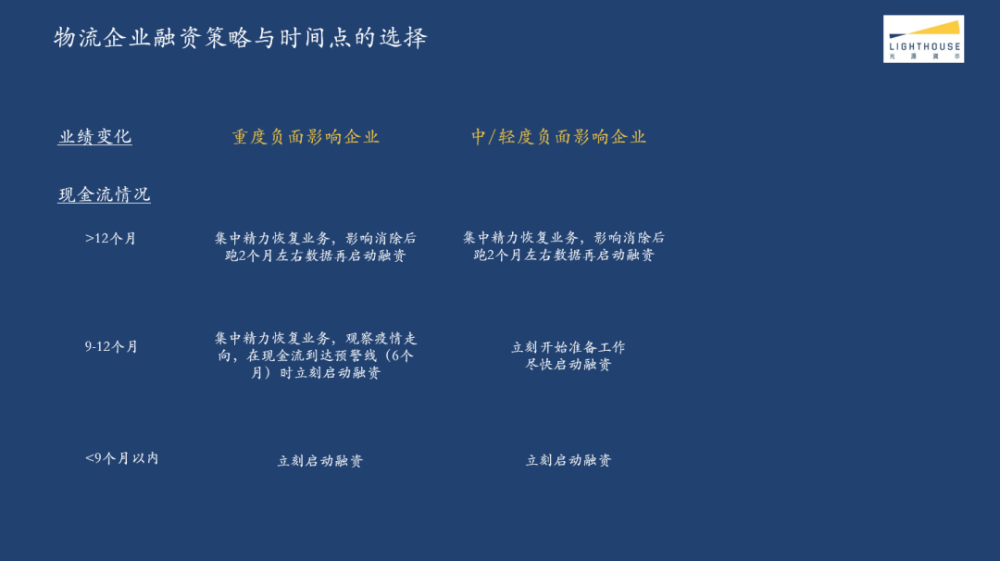

深度专访：疫情之下的创意从业者，你们还好吗？
原文链接 备份链接 \ 💪 / *2020年的开头，一场突如其来的疫情让所有行业都笼罩在阴影之下，创意产业也无法幸免。* *工作要么被取消，要么无限延期；每天紧盯确诊人数的变化，似乎也失去了创作的心情……* *疫情之下的你们都还好吗？* …

燃财经（ID:rancaijing）原创
作者 | 苏琦
编辑 | 魏佳
“活下来是第一要务。”光源资本创始人兼CEO郑烜乐建议创业者，在疫情之下融资要战略上积极、战术上严谨。
2月25日，燃财经举办线上沙龙，主题聚焦物流货运行业，光源资本创始人兼CEO郑烜乐，货拉拉创始人兼CEO周胜馥，阿里本地生活副总裁、蜂鸟即配业务负责人刘歆杨分别进行了主题分享，并和燃财经总编辑贺树龙做了对话。
光源资本是一家专注于新经济领域的精品投行，宗旨是服务于1%顶尖企业家。公司成立到现在一共五年多时间，帮助近80个公司完成110+轮融资，累计交易金额超过100亿美元，其中有十几家公司成为独角兽，估值超过10亿美金，客户总估值超过700亿美元。
光源在物流领域服务了如货拉拉、闪送、乐卡车联、鸭嘴兽等项目。“特别是货拉拉和闪送，是我们从A轮、B轮一路服务上来的公司。陪伴他们从小做到大，看着他们做对了很多事情，我们也从中收获了很多。”郑烜乐称。
•疫情对于物流企业的影响，具体到细分业务上，整车快递目前的恢复率可能不到50%，零担的恢复率可能只有10%左右，形势都比较严峻；
•物流赛道的投资逻辑就在于捕捉马太效应：找到有马太效应的领域，发现具备马太效应的要素，捕捉具备马太效应的公司；
•融资难在去年就已经出现了，疫情只是一个筛选器，让很多本来商业模式没有那么好，或者说现金流模型没有那么好的企业提前出局；
•活下来是第一要务，这是所有融资的策略。在经济比较差的时候，或者说疫情影响没有消退的时候，先活下来最重要，再加上小步快跑的策略，不恋战，以落袋为安作为第一优先级。
以下是郑烜乐在燃财经沙龙上的详细分享内容：
***物流行业整体恢复率不足50%***
疫情对国民经济造成了很大的冲击，具体到物流这个行业，需要从更底层的角度去做分析，这里面有四个维度。
首先从需求端来看，线下消费受到了很大限制。我们有一个做零售的客户，他昨天非常高兴地跟我说，他们当天的销售额终于达到了春节前的25%，可见线下消费受到的冲击之大。与之相对应的是，线上的电商和外卖等到家服务的需求变得越来越强劲，但是由于现在国内线下消费还是占整个大消费市场的主体，所以需求的整体下降，对于物流行业来说也是一个比较大的负面因素。
第二个维度是供给端。实体经济的复工率比较低，到现在为止只有50%-60%。前段时间工厂停工、物流停运，导致整个生产资料短缺，但是这些企业的固定开销都比较大，中小企业的现金流压力非常大，如果说在三月份之内疫情还是不能得到有效的控制，那么中小企业的生存处境可能会比较危险。但中小企业是物流领域非常关键的上下游参与者，所以可能也会对物流行业造成一定的冲击。
第三个维度是生产要素层面。物流司机的复工率目前还处在低位，重卡司机的复工率甚至不到40%。园区集散的产能也只有60%左右的水平，所以我觉得整个物流行业目前的复工状态是比较慢的。加上各个区域的封城封路现象，生产要素层面还是会有较大的影响。
最后从宏观政策层面看，国家出台的一些控制疫情的政策，也对物流行业造成一定的影响。后续我相信随着这些政策的逐渐解除，以及货币政策和财政政策的推进，包括用社保来支持中小企业，上述现象会进一步得到缓解。
疫情对于物流企业的影响，具体到细分业务上，整车快递目前的恢复率可能不到50%，然后零担的恢复率可能只有10%左右，形势都比较严峻。因为外卖和电商的配送量在疫情期间大幅度增加，同城配送反而成了刚需，加上区域之间交通的限制较小，所以受影响不大。但同时，由于线下餐饮行业的负面影响比较严重，所以冷链型的同城配送恢复率仍然比较低。
Q1本来就是整个物流行业的淡季，这会一定程度上缓冲疫情对于物流企业业务的影响，但平均来看，还是会占到全年业绩的20%左右，所以如果疫情持续到四、五月份才能完全控制住的话，将会对物流企业的业绩有进一步的影响。
物流企业赖以生存的实体经济，包括上下游中小企业的倒闭，会对物流行业造成二次冲击。加上国际疫情的蔓延对出口造成的不利影响，也会反过来影响航运和集卡等行业的发展。
疫情对于物流企业财务状况的影响，首先是业务体量不能覆盖租金和人工，还有资产折旧等等高额固定成本，这在Q1将会是一个比较普遍的现象，也会造成全年盈利能力的下滑。一旦上游企业现金流压力加大，将会导致物流企业的回款能力变差，加上高额的固定支出，会使得企业面临比较大的现金流压力。
但是整体来看，疫情始终只是一个短期因素，不管到几月，疫情总会过去，长期来看依然危中有机。伴随着电商渗透率的提高，大家的需求更旺盛，这些生活方式和生活习惯的变化，也会对行业产生较为长期的积极影响。
除了物流快递行业以外，其他的物流领域目前来看还是比较分散的。中小制造和商贸企业的倒闭也会影响中小物流企业的经营，而物流的大多数领域本身也越来越具备马太效应，我认为疫情也会加速行业洗牌，促进行业的整合。对于一些目前在领跑的公司来说反而是一次比较大的机会。
***马太效应加剧***
***绝大多数创业公司可能会死在A/B轮***
从物流行业过去几年的投融资数据也可以看出一些趋势。

2018年是物流行业相对来说发展较快的年份，到2019年，交易数量比2018年一下子下降了34%，交易金额下降了56%。
资金向头部企业聚集的趋势也越来越明显。从2017年到2019年，行业估值和体量TOP10企业的融资额占整个行业当年融资总额的比例分别是68%、78%和94%，体现了比较强的马太效应，强者恒强。
我们也能看到A轮的融资事件在2019年大幅度降低，轮次转化率也在快速下降。A轮到B轮的融资转化率，从2018年的28%降到2019年的21%，B轮到C轮的转化率，从2018年的48%降到了2019年的35%。
这充分说明了融资正在变得越来越难，特别是对于非头部的物流企业来说，随着资金快速向头部企业聚集，头部企业的融资难度相对降低，且绝大多数的创业公司可能会死在A轮或者B轮，因为融资的竞争越来越激烈。
物流赛道的投资逻辑就在于捕捉马太效应：找到有马太效应的领域，发现具备马太效应的要素，捕捉具备马太效应的公司。
过去几年上市的物流公司，要么是有网络效应和规模效应，像四通一达等快递行业；要么就是可以靠资金去构建马太效应，比如说一些船运领域的公司。
现在新兴起的这波物流公司，更多是平台型的公司，这样的公司可以用更低的资本投入、更快的速度来构建马太效应。在互联网出现之前，同城货运的公司其实是不具备马太效应的，会受到司机跑单等因素影响。但因为技术的变革，出现了移动互联网、移动支付，涌现了像货拉拉、满帮这样的公司，他们通过技术迭代在行业里面快速建立马太效应，发展成为平台型的公司。
投资人其实是会关注马太效应形成的速度，比如不同的行业和不同的公司，他们运力网络的覆盖速度以及跨区的复制速度其实是不一样的。马太效应形成过程中的效率和风险，也是投资人看重的，所以他们在关注增长的同时也会更关注现金流，关注交易模型以及未来毛利的提升空间。
*****疫情中逆势拿到TS*****
*****有两大秘诀*****
疫情其实只是一个放大器，而不是转折点。疫情之下，企业融资是很难，但是融资难在去年就已经出现了，疫情只是一个筛选器，让很多本来商业模式没有那么好，或者说现金流模型没有那么好的企业提前出局。
这也是为什么平台型的公司更容易跑出来——他们在疫情期间比起非平台型的公司有更好的现金流模型，他们的成本结构、资金使用效率也会更高，他们也可以在疫情期间更高效地去调度资源、整合运力。光源最近一共向疫区组织捐赠了超过30万件医疗物资，在这个过程中，在武汉市内很多地方的交付，很多都是通过货拉拉的司机来完成的，平台模式在此时确实会有一些优势，能够在任何时候提供一定的运力保障。在此，我也想特别感谢一下我们的好朋友聚盟，此次光源爱心援助行动中他们也在运力上给我们提供了不少帮助。
另外，我们认为信息化和智能化程度高的企业，在疫情之后，恢复速度会更快。长期来看，我们比较看好技术替代人工去优化调度效率，降低人工成本。比如我们服务的客户鸭嘴兽，他们也是用技术驱动去提升码头集卡行业的运力整合效率。
模式轻，现金流健康的公司，他们受疫情的影响是比较小的，比如货拉拉、乐卡车联，他们用平台模式整合运营了1000多条零担的线路，固定成本低，资金风险也会相对较低。
和一些物流企业交流之后，我在此分享一些大多数公司比较行之有效的经营措施。从业务的角度来看，现金为王，尽可能做精细化运营，以经营安全作为第一优先级，不要去增加重资金投入的新业务尝试和资本性的投资。其次，调整渠道策略和销售体系，特别是对于一些偏大B的物流公司，可以设计一些回款激励，加快现金流周转。另外，用变动成本尽可能多的替代固定成本，例如人力的灵活化和运力的灵活化运用。
最后讲到光源的老本行——融资。总体来说，战略上要积极，战术上要严谨。战略上乐观是因为投资的反弹往往会快于负面因素的结束，投资人本质上都是要投好公司的，只要这个好公司在这个过程中还是能够生存且能够跑出来，那投资人看到疫情洗牌导致更大的马太效应以后，投资行为还是会继续。
但是相应的就需要创始人在战术上严阵以待，这里有12个字口诀——合理预期、科学计划、周密执行。活下来是第一要务，这是所有融资的策略。在经济比较差的时候，或者说疫情影响没有消退的时候，先活下来最重要，再加上小步快跑的策略，不恋战，以落袋为安作为第一优先级。
然后在融资的过程中，有两个关键的方法论，第一，长期和短期的影响要素拆开。可以跟投资人讲清楚哪些负面表现是短期影响，而哪些正面因素才是长期影响。这样可以快速把投资人拉到理性看待自己业务的状态中。
比如我们最近有一个客户，我们帮他在疫情中拿到了TS，他的业务受疫情影响还是比较明显的。但是我们截取了1月22号之前的经营数据，跟投资人分析：第一，截至1月22号的数据，表现都非常好；第二，这个业务受疫情的影响肯定只是一个短期的影响，疫情结束后，因为它是一个刚需品类，肯定会很快恢复。投资人看到数据也比较认同，后来又参考了2003年SARS结束以后这个行业的恢复情况，最终做出投资的决策。
第二个方法论是分清整体和局部，挖掘好整体和局部的不同价值。我们另外一个客户也是刚拿到了TS，他们的业务也受到了很大影响。但我们看到他所有没有被关闭的业务网点，恢复情况很理想；有部分开的比较早的业务网点，比去年同期涨了百分之二三十。投资人看到这个局部的优势变化以后，认为只要疫情恢复，公司整体业务还是会很快起来，于是决定投资。
要想把融资从一件可能看起来像碰运气的事，变成一件科学的事，就要科学管理所有的交易时间节点。在每一个节点到来之前，做好充分的后备方案。企业家也应该保持开放的心态，积极向资本市场沟通企业受到的影响以及恢复的情况，这样更有利于建立投资者的信心。同时创业者要在条款和估值方面尽可能更加开放，以合适、平衡和速度作为交易的第一原则。


***企业应备好九个月的粮草***
我在去年感受到整个资本市场完成融资的时间差不多是六个半月左右，今年这个时间有可能还会进一步延长，所以我认为今年企业的生死线应该是九个月。也就是说，企业一定要备好九个月的粮草，如果不够九个月，就应当马上开始融资。
如果一个物流公司正在进行融资，他的业务也受到了疫情的影响，怎么去把这个正在进行的融资，尽可能好地推动下去？主要有四个要点。
第一是充分沟通。一定要及时跟重点投资人同步公司业务的变化，充分的沟通会比让投资处在不确定性的恐慌中要好很多。一定要区分清楚短期和长期的影响、整体和局部的关系。了解投资者的核心顾虑，了解内部决策人的动态，在这个关键的时间节点，去管理好他们对于业绩复苏的预期。
第二是战略纵深。对于企业家来说，一定要更多地去和参与交易的投资人进行谈判，特别是可以领投的投资人。同时跟老股东去做进一步的沟通，去商讨包括先借笔钱的可能性。
第三是科学管理资金。一定要去明确每一个时间点，比如说投资人答应什么时候给TS，什么时候准备出SPA等。如果这些时间点miss掉的话，那一定要启动后备方案。另外要把现金流管理好，尽可能在谈判期间省着花，去保持谈判能力。此外还要小步快跑，去降低投资的决策门槛——可以把一个比较大的融资拆成几轮来融，或者是把一个比较大的融资估值涨幅拆成几步来实现，都会更好地推动交易。
最后是灵活谈判。一定要在业务下行保护的基础上，跟投资人去评估业绩复苏的节奏，以此来做估值的调整，或者是把投资变成可转债，会使投资决策更灵活一些。
疫情必然对物流行业有冲击，但就像2003年SARS之后，出现了阿里和腾讯这样非常厉害的公司一样，我也相信这次疫情，会让物流领域的一些组织能力强、模式又好的公司跑出来。我们只有拭目以待，希望看到更多的、用创新来对抗疫情的伟大公司。
对话郑烜乐：
***2020更看好***
***工业自动化、产业互联网、新人群***
燃财经：疫情带给光源资本FA业务本身的影响有多大？疫情期间的FA业务有何特点？资金的供求两端分别是什么状况？
郑烜乐：拆解成两个方面来看。短期来看肯定有影响，因为我们的客户会受一些影响，比如说线下消费、供应链、工业领域、物流领域的客户，业务上还是会有些影响。但好在这只是局部，有些行业，比如泛文娱、在线教育、电商这些领域，刚好迎来爆发式的增长，一来一去有对冲作用。另外，大家现在都用Zoom来开会，投资人现场尽调的节奏也变慢了，第三方机构进场的速度没有那么快，但是总体上我们的业务还是在正常推进的。
光源是服务于头部企业的精品投行，所以影响其实还是比较小的。相对来说，头部企业能更好的在疫情中冲出来，抗风险能力会更强，抓住红利的机会也更多，长期来看对我们可能也是好事。
燃财经：最近，无接触的概念比较火，你认为这会加速物流行业与人工智能的结合吗？投资人可以重点关注什么类型的项目？
郑烜乐：无接触在疫情期间是比较热的话题，但是能否成为一个长期趋势，还需要观察。我们之前也一直在关注物流领域跟机器人和自动驾驶的结合，但离大规模商业化，在终端这块还需要一定时间。然后在集散环节，生产环节，可能已经有一些大规模的应用了，这些可能也是投资人目前应该会去重点关注的领域。
燃财经：2020年，你认为创业者和投资人应该重点关注哪些新趋势、新方向？
郑烜乐：中国现在其实制造业到了一个转折点，中国想保持制造业大国的地位，在往人工智能和工业4.0方向转型，这是一个非常关键的时间点。我们也会去积极布局一些工业自动化、工业智能化的公司。其次是产业互联网，这依然是我们高度关注的领域，还是有很多产业的效率可以被进一步提升。最后我们还是坚定看好新人群、新消费的一些趋势。
***长期主义+利他主义、赌异类***
***才能有逆势的投资成绩***
燃财经：2019年光源资本收获颇丰，服务的项目都取得了新的突破，比如趣头条、B站、快手、每日优鲜、哈啰出行、快看漫画、少年得到、毒APP（已更名“得物”）、Soul，在创投行业整体低迷的背景下，光源资本为什么还能有这么好的业务表现？你们做对了哪些事情？
郑烜乐：做的最对的事情其实就是服务于1%顶尖企业家，然后让最好的企业家去拿到最好的投资人的钱，形成一个正向循环，同时给我们带来好的口碑，再来吸引更多的好项目。具体到能力拆解方面，我们将研究放在很重要的位置，不少项目都是我们通过研究去挖掘出来的——不管是年轻人群也好，下沉市场、新消费趋势也好，产业互联网趋势也好。
总体上我们会特别看重几类机会，第一类是大的赛道里面强者恒强，第一名持续增长，快手就是很典型的公司。第二，这个赛道里面本来有一个第一名，但我通过研究发现这个行业的很多关键成功要素，第二、三名更具备，或者是新进入者更具备，那我们就去帮他们成为这个第一名，这套方法论也诞生了很多公司，比如哈啰单车。第三，我们也非常擅长去发现一些大家本来没有那么关注的赛道，比如得物APP，潮鞋潮服领域，本来很多人觉得是一个小品类，我们做了研究以后觉得会成为一个大赛道。
我们也很注重资源，不管是BAT还是政府相关的资源，通过这些资源帮助企业家。我们不仅定位于帮企业做融资，我们也希望帮企业做战略规划、并购整合和产业布局。
燃财经：2014年底，你在望京创立了光源资本，过去5年多，创投环境可谓风云变幻，作为一个创业者你有哪些感悟和收获？
郑烜乐：我在创业方面的感悟主要有两点。第一是长期主义。很多人认为FA是一个离钱比较近的行业。在这个基础之上，是不是以长期的心态来做事，是不是以和企业家一起来创造长期的价值为导向来做事，就显得非常重要。第二是利他主义，因为我们这个行业其实是企业家成功才是真正的成功，一定要利他，一定要以跟企业家去创造10年、20年的长期价值，作为长期的导向。
燃财经：能聊聊你和货拉拉创始人兼CEO周胜馥之间的故事吗？为什么看好货拉拉？
郑烜乐：我在2014年到2017年之间，聊了几乎所有的同城货运行业里面的公司。当时我曾经认为这个行业是一个伪行业，因为所有的模式都是补贴，司机在里面刷单，不能把用户的行为固化到平台上。直到我碰到了周总，他跟我讲了他的经营理念和商业模式，让我看到原来这个行业还是能够把优质的运力给筛选出来的。
他确实是一个在这个领域非常不同的创业者。之前我聊过所有的founder几乎都是做物流出身的，只有他是非物流行业，还有一些比较有趣的经历。我当时就觉得如果一个行业里边所有人都是一类人，而他们都没做成，然后这个时候有一个异类出现了，他把这事做成的概率，至少是非常值得去赌的。


你身边的物流公司复工了吗？
欢迎在评论区留下你的评论，原创文章转载请点击公众号菜单“转载合作”。
一手资讯/硬核报告/每日红包/线下活动！就差你了！快加微信rancaijing02回复“读者”一键上车！


燃财经工作室
点个在看吧😘
长按二维码向我转账
点个在看吧😘
受苹果公司新规定影响，微信 iOS 版的赞赏功能被关闭，可通过二维码转账支持公众号。
原文链接 备份链接 \ 💪 / *2020年的开头，一场突如其来的疫情让所有行业都笼罩在阴影之下，创意产业也无法幸免。* *工作要么被取消，要么无限延期；每天紧盯确诊人数的变化，似乎也失去了创作的心情……* *疫情之下的你们都还好吗？* …
原文链接 备份链接 燃财经（ID:rancaijing）原创 作者 | 黎明 编辑 | 阿伦 疫情对物流行业造成了巨大影响，货拉拉创始人兼CEO周胜馥称，疫情期间货拉拉的订单量下降了约80%，今年2月份的亏损金额高达1个亿，但他同时表 …
原文链接 备份链接 人员返岗难、道路不畅通、现金流紧绷，中小物流企业需要更多的支持和帮助，这不仅事关物流业全面复工复产，也关系到民生和社会稳定 文 |《财经》记者 王静仪 编辑 | 施智梁 快递员王为这几天已经忙昏了头，他所在的上海市浦 …
原文链接 备份链接 疫情对全球供应链的影响触及哪一阶段，及其冲击程度，将取决于疫情本身的演变及持续时间。如果疫情对全球供应链冲击推演到第四阶段，那么疫情将升级为严重冲击全球经济的灰犀牛 文 | 徐奇渊 世界银行的世界发展指数（WDI）显 …
原文链接 备份链接 疫情蔓延令本就身处经济逆周期的中小企业雪上加霜，尽管驰援举措已开始出台，但他们企盼更大规模的政策扶持，比如减费降税 图/ IC 文 |《财经》记者 张颖馨 张威 编辑 | 袁满 “坐了一天，小鸟飞过10只，行人8人， …